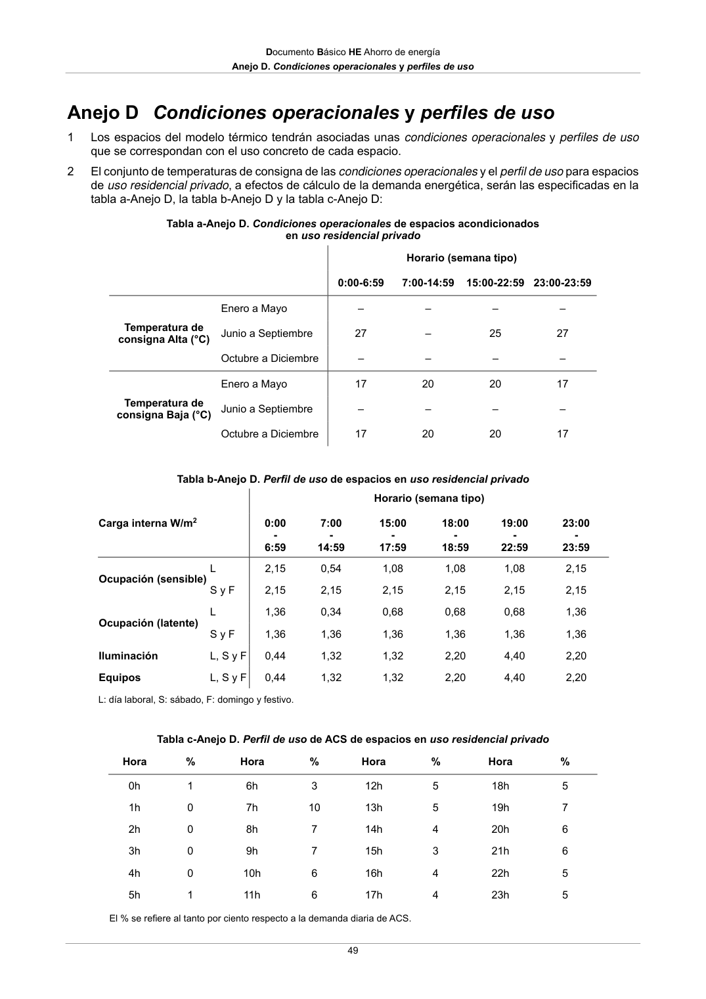

DB-HE Ahorro de energía · edición 2022-06-14 · capa oficial
Documento DB-HE-oficial · SHA-256 del PDF 7f890bd495552e979f83f72c5f5c7b642e745911a8e343a7b5b73023ce0e1f05
Copia fiel del PDF fuente · Fuente oficial
Ficha de la disposición en la fuente oficial
Formatos: JSON del segmento · Markdown
Anejo D. Condiciones operacionales y perfiles de uso 49 Anejo D Condiciones operacionales y perfiles de uso 1 Los espacios del modelo térmico tendrán asociadas unas condiciones operacionales y perfiles de uso que se correspondan con el uso concreto de cada espacio. 2 El conjunto de temperaturas de consigna de las condiciones operacionales y el perfil de uso para espacios de uso residencial privado, a efectos de cálculo de la demanda energética, serán las especificadas en la tabla a-Anejo D, la tabla b-Anejo D y la tabla c-Anejo D: Tabla a-Anejo D. Condiciones operacionales de espacios acondicionados en uso residencial privado Horario (semana tipo) 0:00-6:59 7:00-14:59 15:00-22:59 23:00-23:59 Temperatura de consigna Alta (°C) Enero a Mayo – – – – Junio a Septiembre 27 – 25 27 Octubre a Diciembre – – – – Temperatura de consigna Baja (°C) Enero a Mayo 17 20 20 17 Junio a Septiembre – – – – Octubre a Diciembre 17 20 20 17 Tabla b-Anejo D. Perfil de uso de espacios en uso residencial privado Horario (semana tipo) Carga interna W/m2 0:00 - 6:59 7:00 - 14:59 15:00 - 17:59 18:00 - 18:59 19:00 - 22:59 23:00 - 23:59 Ocupación (sensible) L 2,15 0,54 1,08 1,08 1,08 2,15 S y F 2,15 2,15 2,15 2,15 2,15 2,15 Ocupación (latente) L 1,36 0,34 0,68 0,68 0,68 1,36 S y F 1,36 1,36 1,36 1,36 1,36 1,36 Iluminación L, S y F 0,44 1,32 1,32 2,20 4,40 2,20 Equipos L, S y F 0,44 1,32 1,32 2,20 4,40 2,20 L: día laboral, S: sábado, F: domingo y festivo. Tabla c-Anejo D. Perfil de uso de ACS de espacios en uso residencial privado Hora % Hora % Hora % Hora % 0h 1 6h 3 12h 5 18h 5 1h 0 7h 10 13h 5 19h 7 2h 0 8h 7 14h 4 20h 6 3h 0 9h 7 15h 3 21h 6 4h 0 10h 6 16h 4 22h 5 5h 1 11h 6 17h 4 23h 5 El % se refiere al tanto por ciento respecto a la demanda diaria de ACS. Documento Básico HE Ahorro de energía Anejo D. Condiciones operacionales y perfiles de uso 50 3 Las condiciones operacionales y el perfil de uso de usos distintos del residencial privado serán las que se definan en el proyecto, pudiendo emplear condiciones operacionales y perfiles de uso normalizados cuando las condiciones de uso de los espacios puedan ser asimilables. 4 En el Documento Reconocido de la Certificación energética de edificios que establece las Condiciones técnicas de los procedimientos para la evaluación de la eficiencia energética de los edificios, se define un conjunto de perfiles normalizados caracterizados por el uso, la carga interna (baja, media o alta) y el periodo de utilización (8, 12, 16 y 24h). Documento Básico HE Ahorro de energía
